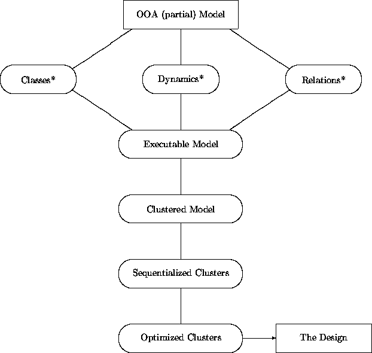

|
Chapter 15: From Analysis to Design |
The goal of the design phase is to generate a description of how to synthesize software objects that behave in accord with analysis models and meet all other system requirements. This phase is a set of activities with:
Analysts see objects as descriptions of required properties and behavior. Designers view objects as computational entities which realize the desired properties in a manner that may be readily implemented using common object-oriented programming languages and tools. In this way, design serves as a bridge between analysis activities that describe those properties a system should possess, and implementation activities that describe the language and environment-dependent manner in which it is constructed.
The border between analysis and design is often filled with discontinuities in non-object-oriented approaches to development. Designers sometimes use analysis information in only the most general ways and reanalyze the problem at hand from a computational perspective using different techniques and strategies than that of analysis. This can even apply to object-oriented design. When OOD is preceded by non-OO analysis, much of the design phase should be preceded by a secondary analysis using the methods described in Part I to establish declarative structure.
One of the most attractive features of a uniform object-oriented approach to software development is structural continuity. The basic decomposition of a system into objects retains its general form from analysis through design and into implementation. Structural continuity is both an empirical observation (i.e., something that appears to hold widely across object-oriented development efforts) and a guiding principle for design methods. Even though their perspectives, methods, and goals differ, object-oriented analysts, designers, and implementors maintain the same overall orientation. They employ the same concepts and terminology for describing objects, classes, behaviors, inheritance, etc. This simplifies and streamlines the development process.
From a designer's point of view, many of the structures and descriptions that we have been calling analysis models in Part I may be thought of as declarative software designs. In Part II we assume that the main declarative aspects of a system model/design have been constructed using the methods described in Part I. Part II is ``merely'' about computational concerns. However, the continuity principle also ensures that OOA models may be refined and restructured during the design phase without the need for painful back-translation when reconciling designs with specifications. The border between design and implementation is also guided by continuity. Program designs should be tuned and restructured on the basis of experimentation, monitoring, and feedback with executable code.
Among the best tools for assessing the need for improvements at all levels is prototyping. We will show how OOD methods can accommodate the creation of prototypes that reflect only those transformations and details already committed. These steps may then be revisited after experimenting with the tentative system.
Exploitation of continuity results in a design process that is robust in the face of errors, suboptimal constructions, and other snags. Any design process that relies on the omniscience and perfection of analysts is doomed to failure. Methods must allow for analysis models to have occasional gaps and imperfections. Constraints and opportunities that stem from computational concerns can strengthen, complete, or override those seen from a declarative perspective. Similarly, analysts (even domain analysts) may not always recognize and exploit common design idioms, reusable components, and applications frameworks. Regardless of these considerations, the diversity of OO constructs allows many concepts to be described in any of several nearly equivalent ways. In the following chapters, we present several alternative strategies for expressing various analysis constructs. The best choice from a design perspective need not mesh with that from analysis.
For these reasons, designers should be prepared for the possibility of new insights, corrections, and improvements throughout the development process. Designers sometimes introduce new classes, refactor class hierarchies, and intertransform constructs in the process of meeting other goals. The methods described in Part II allow these manipulations to be phrased in ways that maintain contact with the original OOA models.
Continuity also streamlines traceability from a software process management perspective. When design refinements are intrinsically keyed to OOA models, they are much easier to keep track of than otherwise. However, achieving this is by no means automatic, especially when analysis groups differ from design groups. Traceability requires a high degree of interaction and frequent reviews, mainly during the early stages of design.
During such reviews, designers should try to anticipate points at which models run into computational feasibility problems, cases where model incompleteness leads to ambiguities, class structures that are known to lead to software quality problems, and so on. Analysts must be prepared to defend, fill in, and/or revise their decisions.
There are many ways to structure this review process. One is to follow IBIS procedures [6] in which review points are raised as well-formed issues. For each issue there may be one or more positions. Each position may in turn have one or more rationales. Issues, positions, and rationales may all lead to other nested issues. These may ultimately lead to a set of decisions, actions, or other outcomes. Maintaining a record of such reviews in this structured form enhances traceability.
Object-oriented design methods exploit continuity while proceeding from a declarative to a procedural point of view. This process may be seen as a series of transformations from the inputs to the outputs of the design process. The most important input considerations from analysis are of the same general form as those described in Chapter 2 as analysis inputs. While the headings are the same, the details are substantially more refined, and reflect the products of OOA activities.
We describe design activities as a series of transformations. However, we cannot prescribe fully algorithmic transformation schemes. The spectrum of transformations includes a few utterly mechanical translations, some involving guided (but not fully predetermined) series of refinements, some providing a wide range of options that must be chosen using situation-specific criteria (this is the most typical case), and some for which we can only provide general advice about how to connect initial and final conditions. The structure of these transformations relies on criteria common to the design of any transformational process, including:
For example, requirements may be handed to a designer in sizable chunks, or even all at once. However, because of their intrinsic dependencies, design activities attempting to deal with these requirements must be in part sequential. It is impossible to assign resources to objects and manage their use until resource demands are at least approximately determined by establishing representational and computational properties. It is similarly impossible to address performance issues until these mappings are known. Sequentiality does not, however, imply that all activities within one subphase should be performed before all in the next.
While we use these criteria for guiding the overall design process, they also govern the architecture of just about any transformational system. Examples include compiler design, simulation system design, and computer vision processing system design.
The three major categories of input from analysis subdivide focal design issues in a natural way. We can expand on these groupings to better characterize them from a design perspective:
The distinctions between functional, physical, and performance phases help capture different concerns and activities within design. While this is a reasonable way of classifying well-accepted object-oriented design practices, it differs from traditional approaches in a number of respects. For example, there is no separation between ``coarse'' and ``detailed'' design. Our presentation actually begins by discussing some small granularity issues, and our performance design methods consider both in-the-small and in-the-large performance factors. Thus, these categories focus more on the goals of design than their granularities. Similarly, we do not focus on (logical) ``architectural design'' per se. OOA models already specify much of the logical structure of systems. While many aspects of this structure may be modified during design, their general forms are established through declarative modeling.
We summarize some highlights of this process in the accompanying diagram. (It has the same interpretation as those of Chapter 12).

The basic framework admits several variations. For example, functional design may be interleaved with parts of OOA by dealing with subsystems or other coarse-grained components as they become available. Design activities may be subdivided among designers working concurrently and semi-independently. Performance design and implementation activities may be similarly distributed and pipelined. Also, design of the general form, policies, and infrastructure of many physical system matters may proceed at nearly any point.
Even though OOA is a declarative activity, analysts implicitly or explicitly adopt some kind of underlying abstract computation framework. Designers must ultimately replace this framework with one that is more easily supported by implementation languages, tools, and systems. Thus, not only must designers transform abstractly defined objects into concretely implementable ones, they must also transform the underlying processing and communication structure. This may be clarified by separating out the underlying computational models used in OOA from the ways analysts describe objects:
We have seen in Part I that most OOA practices implicitly or explicitly assume that every object is an ``active'' agent residing in its own processor. This framework would be pretty easy to deal with in design if a system were targeted for a massively parallel MIMD computer supporting exactly this computational model. But this is not a reality. These days, practical systems must occupy many fewer processors than objects. This means that objects must be packed into a relatively small number of interacting processes.
For both conceptual and pragmatic reasons, it is useful to think about a model that pushes this to an extreme, and packs all objects into a single program. This computational model is captured in the notion of a single-process object-oriented supervisory kernel . A kernel is the virtual machine that supports object computation. It specifies how objects are constructed and managed, how events are scheduled, and how communication is arranged.
The pragmatic utility of this model is that, unlike the massively parallel version, a single-process kernel may actually be implemented without engaging in many of the design issues described in Part II (cf., [22]).
An operational high-level kernel serves not only as a concrete implementation of a computational reference model, but also as an interpretive prototype simulator useful for experimenting with preliminary designs.
Prototypes may be implemented using techniques common to any single-process simulator or interpreter. The basic idea is to create a single active computational agent that receives all events in some kind of queue. When conditions allow, it pulls an event off the queue and performs the indicated actions on behalf of the simulated objects. In this way, all conceptually active objects may be simulated passively, at the expense of creating an all-powerful super-object forever repeating the following steps:
This is actually just a variation on the computational structure implicit in OOA object models. (Compare the figure in Chapter 6.) It assumes that all state changes, etc., are explicitly described in a computational fashion. But instead of empowering all objects to perform their own transitions and communicate with others, this model forces the single super-object to behave as if it were composed of all others, and to communicate only with itself via the queue.
The single-process nature of this interpreter allows it to be constructed without dealing with concurrency, distribution, and encapsulation issues that otherwise complicate design. However, this is a highly simplified model. A more complete version would need to address several other issues described in Part II, including:
Many other design and implementation issues must be faced during the construction of such an interpreter. For large software development projects, efforts to do so are repaid with the ability to test preliminary designs. For smaller efforts, this model, even if not implemented, remains a useful conceptual tool for approaching and organizing design efforts.
While very generally stated, the features of this model are not engraved in stone. A preliminary design step is to agree on those details that might impact the overall approach taken in designing individual classes. This may then serve as a computational reference model for design. For example, the reference model may be severely constrained when the system is required to be implemented as a single program written in a single language. In this case, the language's own run-time kernel (or an abstraction thereof) may be substituted for the interpreter.
This view of prototype-compatible design does not cover all uses of prototypes. For example, prototyping the look and feel of a user interface is best carried out through side efforts experimenting directly with a Smalltalk environment, or with a C++ system using the InterViews toolkit [12], or whatever.
| OAN Construct | ODL Construct |
| Instance ( ch.3, ch. 8) |
new (ch.16 )
|
| Parametric Instance ( ch. 8) |
new, unique ( ch. 17 ) |
| Class ( ch.3) |
class ( ch.16 )
|
| Attribute ( ch.3 ) |
fn ( ch. 17)
|
| Qualifier ( ch. 3) | Qualifier ( ch. 17) |
| Constraint (ch. 3) |
inv (ch 17 )
|
| Multiplicity ( ch. 3 ) |
opt, SET, ... ch. 17ch. 18 )
|
| Default (ch. 3 ) |
generator ops ( ch. 16 - ch. 17 )
|
| Relationship ( ch. 4) |
class, fn, ...( ch. 18)
|
| Relation Instance (ch. 4 ) |
new, class, fn, ... ( ch. 18)
|
| Parametric Relation Instance (ch.4 ) |
inv, ... (ch. 18 )
|
| Generic Class ( ch. 4) |
class[T] ( ch. 16, ch. 18 )
|
| Set ( ch. 4) | class, SET[T], ... ( ch. 18 )
|
| State ( ch. 5) | fn ( ch. 17, ch. 19)
|
| Initial State (ch. 5 ) | init (ch. 17 )
|
| Final State (ch. 5 ) | delete (ch. 24 )
|
| Transition Guard (ch. 5 ,6}ch. 6 ) | when (ch. 19 )
|
| Transition Action (ch. 5 ,6}ch. 6 ) | ==>, { calls } (ch. 16 20}ch. 20 )
|
| Transition Event (ch. 5 ,6}ch. 6 ) | ==>, { sends } (ch. 20 20}ch. 20 )
|
| Service (ch. 6 , ) | op (ch. 20 )
|
| Exception ( ch. 5,ch. 6 ) | reply, ... ( ch. 20)
|
| Message Queuing (ch. 6 ) | pend ( ch. 19)
|
| Acquaintance (ch. 6 ) | fn, arguments, class, ... (ch. 16 ch. 18 )
|
| Subclass (ch. 7 ) | is, ... ( ch. 16)
|
| Partition ( ch. 7) | oneOf, ... (ch. 17 )
|
| Metaclass (ch. 8 ) | class, generator, ... (ch. 18 , ch. 22 )
|
| Ensemble ( ch. 9) | class ( ch. 16,ch. 22 )
|
| Ensemble Constituent (ch. 9 ) | local, own (ch. 17 )
|
| Timing Constraint (ch. 11 ) | @ ... (ch. 19 -ch. 20 )
|
The language of analysis is that of models and notations geared toward the goals of the analysis phase centering on the description of what systems do (not how they do it), written in a way that is meant to be complete, yet humanly understandable by both customers and designers.
Designers need to recast analysis models to enable further transformation of the declarative information supplied by OOA, while also supporting expression of computational and representational information important to implementors. Neither the graphical and textual notations of analysis, nor the implementation-dependent notations of common object-oriented programming languages suffice to describe this effectively. The computational aspects of design become tractable only by introduction of a notation that can capture analysis concepts on the one side, and implementation constructs on the other.
These considerations are not restricted to matters of software design. Electronics design increasingly relies on textual notations such as VHDL [13] to express the detailed structures and properties of designs while still abstracting over physical layouts and electrical characteristics. However, there are no universally or even commonly accepted intermediate languages for software design. In the case of systems-level object-oriented design, there are few such languages at all, and none that seem particularly well-suited to our goals of supporting (relatively) simple translation of analysis models on the one hand, and (relatively) language-independent design on the other. So, for the purposes of this book, we have reluctantly concocted an intermediate language ( ODL) as a vehicle for expressing basic design notions. Like OAN, ODL is intended to be a very lightweight veneer that is easily converted to other notations and languages. We do not in any way insist that ODL be used when following the design methods described in Part II, but we need something concrete and specific to get across the main ideas. However, this book is not ``about'' OAN and ODL. You do not have to take the syntax as seriously as we sometimes do. In the course of reading examples, you ought to be able to jot down similar constructions using your favorite notation.
While translation from OOA to OOD declarative form is straightforward, there are few recipes. As listed in the accompanying table (a preview of translation mechanics discussed in Part II), several options are usually available. Even so, the transformational nature of design maintains backwards compatibility. Design measures result in classes, operations, etc., whose basic structural characteristics remain representable in OAN. The principle of structural continuity implies that most graphical OOA models are also graphical design tools, at least for the declarative aspects of design. However, our increasing computational focus leads to decreased reliance on OAN.
ODL shares many features with commonly used object-oriented programming languages. It differs from programming languages in its ability to describe the properties of objects and operations, in addition to their representational and computational structure. Also, ODL retains from our analysis models the ability to describe parallelism and system architecture without having to commit to the extra-linguistic tools and systems typically required for their implementation. (This fact represents the most fundamental reason for using ODL in this book. The current state of languages, tools, and services for implementing such notions otherwise precludes a uniform treatment of underlying design concepts.) Still, ODL is very small and primitive, as OO notations go. These properties sometimes lead to awkwardness, but also lead to transparent translation to OO programming and tool constructions. We will exemplify translations to C++ and C++-based tools as we progress toward program design issues.
Design notations and corresponding methods for objects that may indeed be active, process-like entities denoted by our analysis models differ in several respects from those focused only on passive objects manipulated within a single OO program. Because these concerns may come into play even when objects are ultimately implemented as passive entities, we will not often distinguish the two until we need to. As a preview for those experienced in OO design of passive objects, we briefly characterize here some of the more notable differences in constructs and emphasis. Details will, of course, follow in later chapters.
Thus, many design steps that form natural components of passive object design must be restructured. We resist premature commitments to sequentialization, representation, and other computational strategies that support declarative properties. The resulting practices may, however, be seen as extensions of the classic design goal of avoiding premature optimizations (i.e., counter-optimizations) of any form.
Interactions may include combinations of one-way message sends and synchronized bidirectional exchanges. Designs relying on one-way asynchronous messages and other protocols built from them are often qualitatively different than sequential programs employing only procedural invocation.
As in our analysis models, we treat the issue of whether an operation should reply to a sender as a property of the receiving object. Clients must wait for the reply in any interaction defined using a bidirectional, procedural operation. One-way message sends may be either synchronous or asynchronous. In one-way communication, synchronicity refers the sending and reception of messages. All one-way messages are asynchronous with respect to their effects. In synchronous one-way schemes (as found, e.g., in Ada rendezvous constructs) a sender must wait until the receiver is able to accept a message. In asynchronous schemes (as found in most distributed processing toolkits), a sender may always generate a message. The message may be buffered by the communications media until it is accepted. There are intermediate forms as well. For example, even in asynchronous schemes, senders may need to wait for a channel over which to send a message. Channel availability may depend on the readiness of a dispatcher that resolves and routes requests. Conversely, in synchronous systems, receiver objects may possess queuing mechanisms allowing them to essentially always accept messages. Thus, we have been and will continue conservatively construing one-way messages as generally asynchronous. Adding synchronicity properties does not change the logic of resulting designs, but may lead to stronger guarantees about event sequencing and timing.
Interaction protocols for common services and bookkeeping responsibilities must be specifically designed. Routing, dispatching, and polymorphism support may also be under ``manual'' control. In addition to other computational and construction details, synchronization and control mechanisms must be specified and implemented. In particular, the design of joint actions involving synchronized transitions among possibly many objects requires transformations that eliminate potential interference, establish protocols to coordinate transitions among participating autonomous objects, and provide recovery mechanisms allowing one object or operation to fail without causing the entire system to fail.
This section provides an overview of principal phases, activities, concepts, and issues described in Part II of this book. Part II is structured similarly to Part I, although many details are not strictly parallel to those of Part I. The core chapters 17-20 parallel chapters 3-6 describing the four basic components of OOA models. However, dynamic computational issues play a far more central role in design, and thus permeate all other discussions.
The initial focus of design is to move from the world of description to that of computation. In the terminology that we will adopt for Part II, OOA descriptions are abstract. They describe attributes and constraints without completely indicating how it is that objects represent and maintain them. OOA dynamic models are similarly abstract. They describe the conditions and effects of state transitions and interactions without fully committing to algorithmic or representational details.
Abstract classes are the translation units of OOA information into a form suitable for other design activities. An abstract class is a kind of summary model, that may be used in the analysis phase as well as design (see Chapter 6). One or more abstract classes bring together descriptions of attributes, relations, states, transitions, events, and interaction protocols for an analysis-level class, while also propelling further design activities.
A near-synonym for ``abstract'' is black-box. Analysis models describe the outsides of objects without saying much about what the insides ought to look like. Abstract classes and operations are valuable tools for design too. Abstract classes at the design level may also represent constraints that are decidedly ``abstract'' but of interest only to designers, not analysts. They may describe the nature of objects introduced solely for behind-the-scenes design purposes and to fill in other gaps.
It is sometimes necessary to recast analysis information into different constructs and idioms in order to meet design goals. Analysis models do not address the nature of classes as software artifacts. Other class architecture requirements are implicitly or explicitly present during the functional design phase. We explore these issues a bit further later on in this chapter.
Among the primary tasks of functional design is reification, the synthesis of internal representational and algorithmic specifications that meet the declarative constraints of analysis models, along with other software-based criteria. This is the most time-consuming and creative aspect of the design process. Designers must choose among the multitude of available idioms to find those that best reflect the abstract specifications and other design goals. They must ensure that software quality criteria are met by paying attention to well-known pitfalls including aliasing and interference.
For each abstract class, a design must define one or more concrete classes that define the inner details of objects that fulfill the promises laid out in the abstract versions. These concrete classes may be introduced without disrupting the abstract characterizations. Any concrete class defines one particular, specialized way of obtaining the properties defined in an abstract class. Thus, concrete classes may be defined as subclasses of abstract ones. Because of subclassing, the abstract versions may continue to be used in the course of other design activities, without introducing any dependencies on how these classes are actually composed. Design also introduces a number of classes for the purpose of organizing and managing relationships, constraints, and interactions between other objects.
Essentially all OO methods for synthesizing internal class properties are compositional. Objects obtain their static and dynamic properties by aggregating, delegating, inheriting, and coordinating those of other objects. The basic idea of compositional design is to build complex objects and operations out of simpler ones. This can take many forms, falling between two extremes:
Property-driven composition begins when you are given an abstract characterization of a class. You must then find some components that make good on it. Typical steps include:
In management-driven composition, you are given information about how a number of other objects may be related and/or how they may interact. This information is just as ``abstract'' as OOA class descriptions, but is focused on relations rather than individuals. The design goal is to find ways of representing and managing relations and interactions. Typical steps include:
These approaches are almost opposite perspectives on the same process of bridging external interfaces and internal affairs through managed composition. Most designs involve at least some aspects of both perspectives. For the moment, we emphasize only the compositional basis of both views. Abstract objects become software objects when built out of other software components. Conversely, groups of related components can be brought together under an abstract interface.
The compositional object-oriented design process differs significantly from that of classic ``structured'' methods. In those approaches, the design phase is normally a top-down refinement process starting with crude structural design, followed by module design, and then detailed design. OO strategies sometimes amount to the reverse of this.
OOA models already provide top-down decomposition of a system into constructs akin to abstract classes. Designers may define associated concrete classes in a more productive bottom-up fashion.
Assuming the existence of good analysis models, there is no absolute necessity that design methods be bottom-up. Top-down analysis models specify both complex and simple classes, operations, etc. It is possible to start off designing details of complex objects and to worry about components later. But there are a number of compelling reasons for working up from the simple to the complex as the default strategy:
These considerations lead to tactics that are highly reminiscent of those used in other design enterprises. The combination of top-down analysis and compositional design has been a winning strategy in a variety of engineering endeavors, especially electronics design. As discussed by Cox [7], many aspects of object-oriented software design parallel those of circuit design. A circuit is designed by composing (most typically via standard interconnection strategies) various elementary devices, each of which is described in terms of its interface, and is often available in different versions.
Pure bottom-up design is most straightforward for very basic and/or general components. It is easy to identify at least some of the analysis model entities that serve as the most fundamental building blocks in a system. They are the ones that do not make any reference at all to any others in the definitions of their static and dynamic properties. After defining these, attention can be turned to classes that depend only on elementary ones, and then in turn these, and so on. All of this can usually be surmised through an informal definitional dependency analysis noting which classes definitionally rely on which others. Of course, it is not the least bit necessary, or even desirable, to proceed exactly in this order.
Preliminary models often lack detailed consideration of the lowest levels of component structure. They sometimes omit descriptions of such components all together, leaving them to designers, who may in turn pass the buck down to implementors. In other cases, they may describe features in unstructured terms, rather than as encapsulated classes. In others, analysts may have failed to notice how the definition of an elementary class or two could simplify treatment of several complex ones.
Some of these situations may be avoided through reviews of analysis models, especially with domain analysts who are familiar with tactics used in related software efforts. Others will require a bit of backtracking while in the midst of dealing with other components. Experience gained while designing various classes may lead to refactorings, new encapsulations, and other simplifications that are sometimes difficult to predict in advance.
The task of physical design is to map a set of software objects onto a set of physical objects.
Typical OO systems cannot enjoy the simplicities of either of our extreme computational models, ``one object per processor'' or ``all objects in one process''. Most systems need to reside in some middle ground of this continuum, in which all analysis-level objects are grouped into some number of coarse-grained active objects, or clusters. Each cluster contains some (usually large) number of objects sharing a CPU, an address space, and other physical resources.
Clusters themselves map easily into contemporary system process structures. In fact, our active object model is nearly identical to standard models of system processes. Thus, another way of viewing the design process is that in functional design, we assume every object, from the tiniest boolean object on up, can be implemented as a self-contained system process. For purposes of functional design we would like to stay away from physical mappings as long as reasonable. With few exceptions, these concerns do not impact the basic structure of classes and objects described by analysis models. It is not terribly productive to deal with these constraints until the computational properties of a system are at least approximately known.
In physical system design, we remedy the illusion that the system can be implemented using arbitrarily many processes. There are two principal phases of physical design. First, objects must be mapped to clusters. Second, the management facilities required to support these objects and clusters must be designed and/or employed.
Nearly all systems are constructed with the help of support tools and services that make specific commitments about how clusters are put together, managed, and allowed to communicate. These allow for ultimate transformation into a range of software architectures.
Systems design activities result in a two-tiered architecture. The system as a whole may be viewed in terms of the interactions of a relatively small number of coarse-grained cluster objects. Each of the clusters is in turn a program, usually written in a standard sequential OO programming language along with associated tools allowing communication to other clusters.
Performance design mainly involves transformations of the ``second-class'' passive objects forced to reside within programs. Design activities involve both accommodation and tuning:
Numerous measures are available to recast or otherwise tune classes and operations to meet performance requirements. Optimization and tuning involve interplay between designers and implementors.
The central notion of a class at the design level is wonderfully flexible and powerful. Classes form a natural focal point for organizing diverse descriptive, representational, and computational properties. The ways in which these properties are conceptually viewed often governs the basic plan of attack for functional design.
We focus on design techniques associated with several different conceptual perspectives on the nature and roles of classes and objects. The different perspectives normally correspond to OOA models that stress particular features of objects. Often, multiple perspectives may be applied to the same OOA model. Designs can look very different depending on which sets of techniques are employed.
We will encounter some general principles for designing classes, as well as some particular idiomatic constructions representing known (small-, medium- or large-scale) architectures that may be applied to common design problems. We focus primarily on the former. We cannot describe all of the OO design architectures, patterns, and idioms that you are likely to need or run into. We restrict ourselves to surveys of some general forms. Still, we frequently discuss multiple alternative paths to a design solution, sometimes at the expense of presenting idioms and constructs that are closer to the level of neat tricks than of principled, stepwise developments. OO design has not matured to the point where we can fully rationalize, evaluate, or even categorize these strategies. Indeed, some people think that the situation-specific nature of design all but precludes development of comprehensive theories and accounts.
We describe many constructs, idioms, and strategies available for transforming analysis constructs into software. While we provide a few hints and guides for using them, we do not include explicit answers for questions such as, ``Which strategy is best for representing relationship R?'', ``Should M be written as a blocking or nonblocking operation?'', and so on. Most such questions cannot be answered. Few strategies and constructions are always right. Their appropriateness depends on how they fit into other design goals and criteria, that may differ from those of analysis. This notion that models are to be transformed into software components places a different perspective on some standard quality notions.
The most central criteria revolve around compositionality. Compositional design is simplest when the construction of one class depends only on the abstract class specifications of its components, not their internal structures. In a compositional design framework, just about every class should be designed to be amenable for use as a component by others. In the remainder of this section, we survey a few more specific criteria and concerns that may serve as guides for deciding among different OO methods and constructions. We will also preview some of their implications for choosing among design idioms and transformations, leaving others for later.
The most well-known design guidelines for enhancing composition revolve around the issue of coupling. An operation, object, set of objects, class, or set of classes that minimizes demands on the computational environment is said to have low coupling with respect to that environment. Decoupled entities are normally easiest to compose. Coupling is a very broad concept, and may be partitioned along several dimensions.
Complex objects need not be dependent on, or even know about, the representational and computational details of other components, as long as they do the right thing. Common abstract class descriptions may cover a range of interoperable implementations. This solves several related design problems:
We are fanatical about eliminating representational coupling, especially at the lowest levels of class design. We are concerned about the design of systems that might be built using multiple heterogeneous platforms, operating systems, and configurations. We take careful, even tedious, measures early in the design process to guarantee avoidance of low-level representational dependencies.
These concerns extend upward. The other side of interoperable subclasses is black-box reuse. We encourage the use of pure composition rather than certain subclassing strategies. Black-box composition is a means of routinely minimizing representational coupling.
Attributes and arguments should always be defined using the least specific (i.e., most abstract) class type that is guaranteed to have the right attributes and behavior. For example, if some print 1 operation just prints a name attribute, then even though it might be ``intended'' for use in printing Client names, it may as well accept any Person object, assuming that Persons have names and class Client is a subclass of class Person. This may in turn lead you to abstract out yet simpler and more general superclasses. For example, you might decide to create a class NamedObject as a superclass of Person and/or other classes.
Footnote 1:br: For clarity and emphasis, we continue to use this font for OOA level names but this font for OOD level names.
Other consequences of subclass coupling include the following.
There are several remedies. For example, when one object requires some service, it often does not need to know exactly who provides this service. We would rather not have to keep track of the targets (recipients) of service messages, especially when they may change, or when discovering the ``best'' service provider is a nontrivial matter. We attack this at several levels, from exploitation of basic dispatching mechanisms to the design of higher granularity mediator objects.
Minimization of identity and protocol coupling is the design analog of analysis-level postponement of the definition of interaction partners (Chapter 6). However, identity and protocol coupling are not always all bad from a computational perspective. Perhaps the ultimate decoupled system is a relational database, where (from an OO view) objects are just represented in terms of their attributes and relations, and centralized systems (database managers) coordinate all state changes without any independent communication between the objects whatsoever. While this may or may not be a good way to manage persistent storage, it is far too centralized to serve as a reasonable model of most software systems. Object-oriented designs distribute knowledge and coordination across a system, generally at the lowest level that it can be reasonably managed. This requires compromises between localization and centralization through intermediate levels of identity and protocol coupling.
The definition of concrete operations should be decoupled from the contexts in which they are employed. This requirement is most obvious and critical when classes are designed for possible use in concurrent execution environments. Here, the internal characteristics of an operation may be identical across different classes and subclasses, but the situations under which these actions are triggered may differ significantly.
For example, in a concurrent environment a request to get an item from a List may be postponed until an item becomes available. In a sequential environment, it may result in an exceptional condition. However, we would like to describe the details of how the item is obtained in the case when the list is not empty in the same way across both situations. We will focus on the design of classes that are assumed to be usable in concurrent settings. However, many will need to become sequentialized.
The other side of minimizing demands is minimizing features. This is related to the familiar software engineering concept of cohesion. A class that maintains, localizes, and protects only those features necessary to perform its primary role is said to have high cohesion.
Objects should provide ``just enough'' functionality and support features necessary to serve their intended roles. While there is often some leeway in deciding among core primitive attributes and operations, objects need not be burdened with the responsibility of supporting derived operations that can be performed with them, rather than by them. This enables additional superimposed layers to control components in different ways.
The most common strategy for minimizing features is to enhance the guaranteed properties of those that remain as core attributes. For behavioral features, this often corresponds to the notion of strengthening postconditions.
Correctness is, of course, of paramount importance. However, objects must also be designed to be robust with respect to internal design and implementation errors leading to run-time faults, misuse (errors by clients), and failures of other objects on which they rely.
Several alternative strategies are available for each case. They need to be tailored to the situations at hand. In addition to the kinds of errors usually addressed in OOA, computational concerns lead to the following problems. Several are just different views of the same phenomena.
Descriptions of the diagnosis and recovery of unpreventable errors should be part of any OOA model. Communications failures, deadlocks, and so on may be accommodated using time-outs, recoveries off history logs, or whatever means specified. Design activities may introduce other opportunities for failure. In most cases, the best strategy is to backtrack to Part I of this book and reanalyze conditions and actions, including:
Like all software constructs, classes are written both for machine and human consumption. To be usable (and reusable), classes must be retrievable, readable, understandable, convenient, general, and so on. These properties rest in part on the availability of good tools to help designers find, understand, and integrate other classes, as well as the availability of documentation, tracing mechanisms, etc. But even the best tools and documentation are useless unless classes are designed with these factors in mind.
First, do no harm. Some OOD constructs and idioms are novel, esoteric-looking, and/or technically demanding. These are balanced with notions aimed at enhancing the chances that designs will be correct, reliable, maintainable, traceable, testable, understandable, and reusable. This emphasis distinguishes our account from many other standard treatments of OOD. We strive to integrate descriptive and computational approaches, sometimes to the point of awkwardness, but always with the intention of providing maximal guidance for designing classes in a conservative, correct fashion.
The key components of this approach are those that integrate descriptive and computational information, mainly via steps linking abstract and concrete classes. We should note that this approach does have some limitations. It can limit the design space. Some concrete class designs may obey abstract constraints, but maintain properties in ways that we cannot describe. We sometimes avoid this by limiting the kinds of descriptive properties attached to abstract classes.
Good design requires good management of constituent activities and developers. While general software development process management strategies are outside the scope of this book, we note in this section a few aspects that are special to OO design and development efforts, especially those surrounding roles and practices enhancing component reuse. They apply equally well across most phases and levels of design and implementation. We will not bother to distinguish them within this context.
Development roles may be assigned according to the kinds of entities that need to be designed and implemented. These may include classes, process management services, interprocess communication services, programs, code-generating tools, simulators, test suites, performance monitors, documentation, installation manuals, and so on. There are also partitioning strategies that cut across these task-based categorizations. Different individuals or teams may be assigned responsibility for tasks associated with different subsystems identified in the analysis or design phase. This is common practice in any development effort. Alternatively, people may be assigned responsibility for developing related classes and/or tools that need to be built regardless of their use in any particular subsystem.
These categorizations sometimes conflict. An increasingly prevalent compromise is to perform most assignments by subsystem and/or task, but also to assign people or teams to reuse management and/or tool management efforts that operate in close coordination with other teams.
In an ideal version of this partitioning, individuals performing subsystem and application development engage in pure design with reuse methods. All development builds on top of reusable components and tools developed and maintained by other teams. At the same time, newly developed components are fed back into the reuse effort. This may be pushed to extremes for routine applications development. Individuals assigned to create miscellaneous small applications may do so solely by connecting existing components in new ways. This would be facilitated by the use of special graphical OO programming languages that construct programs by compiling interconnection graphs.
Tool management and reuse management teams are motivated and structured along the same lines, and are even commonly rolled together as the responsibility of a single team or individual. In both cases, implementation of the current system may progress most rapidly if the teams are involved very early in the system development process, so that support software is ready when needed.
The differences between OO tools and OO class libraries can be a little subtle, and perhaps not even worth defining with respect to management efforts. For example, a tool that generates classes for custom user interfaces is often interchangeable with an application framework providing operations on abstract Window, Button, etc., classes that may be customized through composition and subclassing. The availability of one might govern whether and how to develop the other. Here, for example, the optimal solution might be to have both an applications framework and a tool that quickly generates common cases within that framework.
A vague but more useful distinction is separation of general-purpose tools and classes from domain-specific ones.
General-purpose software might include user interface classes and tools, interprocess communication tools, basic collection classes, system interface classes, and instrumentation tools. For these, teams and individuals may spend more time in acquisition and evaluation of externally obtainable components than in creating new ones. They may become the local experts in the use of this software, and provide training and consulting to others. Cases in which general-purpose classes and tools are required, but not available, may lead to side channel development efforts that are sponsored by several ongoing applications projects.
Domain-specific software supports a line of products, but not any one of them per se, for example, application classes (e.g., for banking), tools generating class stubs obeying particular error protocols, and classes and tools supporting authentication protocols. Most domain-specific efforts are constructive rather than evaluative. Building such classes and tools during the course of development of any one project represents an investment in the future.
Reuse management should be an ongoing concern. For any particular project, a reuse team should be involved early in the development process. Members help identify components and chart out reusability prospects. These efforts are facets of domain analysis, as described in Chapter 13.
Regardless of whether they address general-purpose or specialized software, and whether they are centered around tools or components, the basic goals in support management are similar: To prevent people from needlessly re-creating designs and implementations, to provide people with a means of profiting from the efforts of others, and to encourage people to create components and tools that may be reused by others.
Problems emerge when individuals do not think to reuse classes before designing or implementing them. Without care, many essentially identical classes may be defined using different names and conventions in different parts of the system. Among other problems, none of these are typically as good as those that would be produced from a well-managed reuse program. Support efforts may include:
The control of reusable components extends techniques common to other software coordination efforts. Tools and techniques should address both reuse-specific and other supportive roles, including:
However, less extensive solutions fare reasonably well, especially for small and medium efforts. For example, as reported in [9], a successful medical software product produced in 18 months by a team of eight relied only on a single-user OOA drawing tool and a C++ compiler. Still, they expect more than 80% reuse for a follow-on project.
Criteria and protocols need to be established for assigning, accepting, revising, replacing, and removing components. General criteria may be based on the quality concerns described earlier in this chapter. However, such criteria are notoriously difficult to apply to individual components. Beyond simply observable qualities such as tests and testability, few automatic checkoffs are always applicable. This leads to the widespread adoption of review (inspection) procedures.
There are many kinds of reviews , including blind inspections, joint walk-throughs, and comparisons of multiple independent designs. These procedures are well described in standard texts on software process management (e.g., [10]). They apply equally well to OO development and to reuse management. Such efforts may be operationalized via certification policies and procedures describing those steps that must be taken for any component to be certified for general reuse. These normally include some combination of requirements for testing, review, and assessment via metrics.
Reuse and tool management efforts and their clients should themselves be evaluated. This is a difficult issue. Metrics for evaluating how effectively people have reused classes and exploited tools remain controversial. Worse, many standard ``productivity'' measures (e.g., lines of code generated per programmer) sometimes counterindicate effective reuse. Much care and judgment is needed in evaluating developers within this framework.
Ideally, object-oriented design methods and practices seamlessly mesh with those of analysis. This is a byproduct of more general continuities inherent in object-oriented software development. These ideals may be approximated by arranging that design subphases and activities respect these continuities. Design may be approached as a series of transformations dealing with functional, resource, and performance requirements. At a technical level, transformation is often only a metaphor, not a series of blind mechanical translations. But even so, transformational logic leads to the formulation of a default strategy that is structured enough to be useful, yet flexible enough to support countless situation-specific variations.
Whether it is focused on the description of object properties, behaviors, relationships, or interactions, design is primarily a compositional process. Complex classes rely on simpler ones for many of their static and dynamic features. Since OOA models already provide descriptive accounts of high-level class organization, the design process may employ more productive bottom-up methods. OO design is also idiomatic. Class-based design frameworks are almost too flexible. Different idiomatic approaches to the same problem often lead to different design solutions.
Criteria for evaluating such solutions resemble those established for any other software artifact. There are many criteria to choose from, and few ways to measure any one of them. We consider them to be most valuable in guiding the design process itself, rather than as metrics for gauging the quality of individual classes, although they may certainly play a part in this as well.
Creating distinct reuse and/or tool management teams is a central factor in making good on the high productivity reputation of the OO paradigm.
Different authors differently categorize the borders or lack thereof between analysis and design; see, for example, Monarchi and Puhr [17], Dasgupta [8], and Potts [20] for summaries.
The compositional OO approach to the design of active objects is perhaps most closely associated with the work of Tsichritzis, Nierstrasz, and colleagues at Geneva; see, for example, [19].
Berard [2] and Meyer [14] provide alternative characterizations of coupling and related OO software quality criteria. Reuse-oriented software process management is discussed by several authors in the collection edited by Biggerstaff and Perlis [4].
Design interpreters may be constructed using simulation, logic programming, and constraint propagation techniques, including those found in OO constraint systems such as Garnet [18].
More formal computational models of active objects might be based on abstract process models including CCS [15], pi-calculus [16], and the Chemical Abstract Machine [3], on algebraic frameworks (e.g., [24]), or on concurrent constraint systems (e.g., [21]). Alternative conceptualizations include models treating all objects as sets of storage locations accessed and controlled by multiple processes [5,1,11].